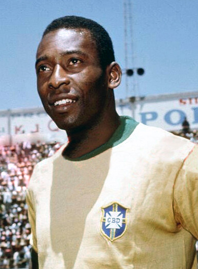

Inductee 01
Pelé
The only player to win three World Cups, and he was seventeen for the first of them, scoring twice in the final. Twelve tournament goals across four appearances. No other career spans the arrival of television, the arrival of money, and the arrival of the modern game itself.